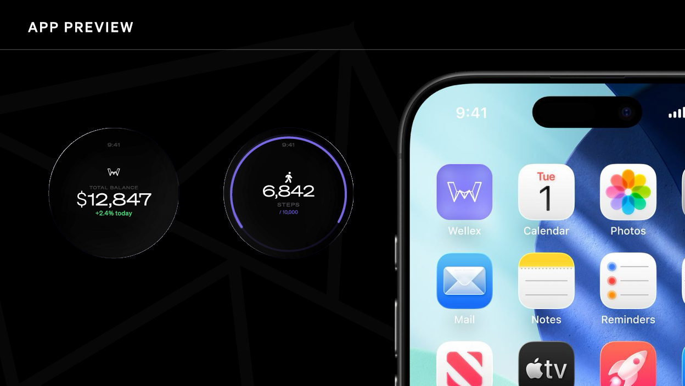

01
Wear it through the whole day
Keep Wellex on across work, training, recovery, and sleep so the system can connect each part of your routine instead of reading isolated moments.
Wellex works by staying with you across the whole day, collecting the body’s signals continuously, and turning that stream into guidance you can actually use.
The value is not just in wearing the device. It comes from collecting continuously, understanding the patterns, and turning that signal into smarter decisions across sleep, recovery, pressure, and performance.

Keep Wellex on across work, training, recovery, and sleep so the system can connect each part of your routine instead of reading isolated moments.
Sensors keep tracking how your body is responding to strain, rest, movement, and consistency while the watch stays quietly in the background.
The mobile layer turns that stream into a clearer read of readiness, recovery, and long-term health habits so the data becomes understandable.
Use the signal to decide when to push, when to recover, and how to build routines that actually improve health over time instead of guessing.
Wellex is built around consistency. The more naturally it fits into the body’s routine, the more useful the signal becomes.